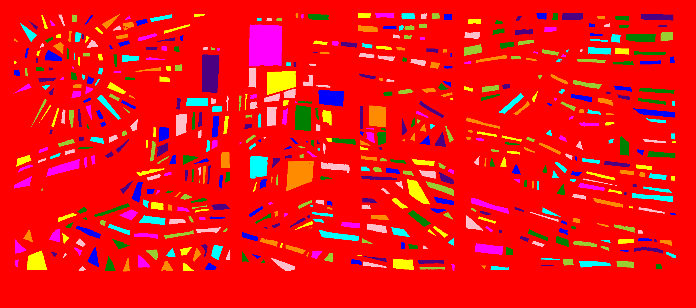

ProgramArte
Dialogos con la obra de Antonio Povedano
Escuela de Arte Mateo Inurria
Javier Povedano Molina
Sobre mí
El reto
¿Sería posible conseguir que las piezas de los collages se pudieran ir sumando como si fuera un puzzle sobre un fondo negro y que fuesen cayendo lentamente para componer el collage completo?
Convertir esto...
...en esto
Los requisitos
Tiempo
Dinero
Repetible
Solución:
Que una máquina lo haga por nosotros
Inteligencia artificial?
Programación
El proceso de crear y construir un programa que será ejecutado por una computadora para realizar una determinada tarea.
Mi caballete...
Mis pinceles


La inspiración
Procesamiento de imágenes
La inspiración
Demoscene
Preparando el lienzo
Ajuste
Rotado, correccion y recortado
Preprocesado
Ecualizado y limpieza
Preprocesado
UmbralizadoProcesado
El trabajo "sucio"
Segmentación
Detectamos todos los elementos